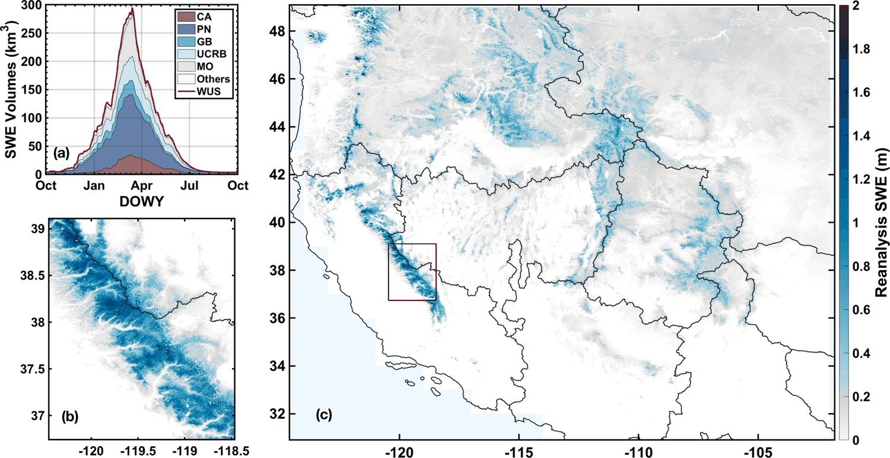
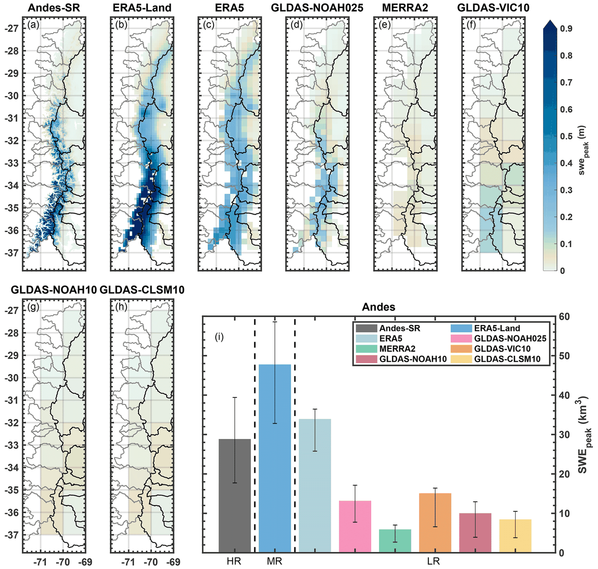

Yiwen FangZJU–UIUC Institute · Zhejiang University
Research
My objective is a class of LLM-powered Earth agents capable of monitoring water
resources with substantially less manual configuration. Such a system would handle data retrieval and
screening, model setup, execution, and the reporting of the assumptions on which its results
depend.
Seasonal mountain snow provides the starting point. It constitutes a principal freshwater reservoir
in many basins, and it remains among the more poorly constrained terms of the water balance.
The two sections below address separate components of this objective, and neither employs agents at
present. The snow data assimilation work applies conventional Bayesian methods, and it establishes the
domain knowledge such a system would need to represent correctly. RSHub addresses the software
requirement, exposing physics-based models through an interface that researchers can use now and that
an agent could call in the future.
Snow data assimilation
No single observing system constrains mountain snow water equivalent adequately. Each trades
spatial resolution against temporal revisit, spatial coverage, or retrieval sensitivity to SWE.
In situ measurements. Treated as ground truth, but stations are sparsely distributed,
often not publicly available, and placed where crews can reach them: mid elevation, flat ground,
forest clearings. That is not where most of the snow sits.
Passive microwave. The signal relates well to SWE, is measured daily, and the record runs
back to 1979. Resolution is coarse, about 25 km, and above roughly 150 mm SWE the brightness
temperature signal saturates and deep snow is underestimated.
Visible and near-infrared. High spatial resolution and a relatively long record, but they
see the extent of the snow rather than its depth.
SAR. Recent work shows the cross-polarization ratio relates well to snow depth, at high
resolution. Coverage is not continuous in space or time, and it does not work over the rocky
terrain in Altay.
InSAR. An active topic, with a theoretical relationship between phase change and SWE
change, at high spatial resolution. It returns change rather than absolute value, phase wrapping
has to be resolved, snowfall between acquisitions can leave pairs with low coherence, and coverage
is not continuous.
Spaceborne lidar. Existing non-commercial satellites do not repeat their ground
tracks.
Models. They produce space-time continuous daily fields, but uncertainty in the inputs
carries straight through to the output.
Data assimilation plays these against each other. The model supplies space-time continuity, and the
remotely sensed observations constrain it.
Regions covered by this work. Coastlines from Natural Earth, public domain.
Western North America and the Andes
480 m · daily · water years 1985–2021 · NASA NSIDC · 5 papers
The record itself

Daily snow water equivalent at 16 arc-seconds, about 480 m, for every water year from 1985
to 2021.
The Western United States Snow Reanalysis (WUS-SR) serves as the reference the other
products are measured against. Its counterpart over the Andes, Andes-SR, comes from the
same group at UCLA (Cortés and Margulis, 2017) and is built with the same Bayesian
framework.
Western United States. Peak snow water equivalent from ten products,
ordered high to low resolution, against the WUS-SR reference in the first panel. The mountain
ranges that are sharp in the first three panels dissolve into blocks by the last. Panel (k)
totals each product by resolution class.

Andes. The same comparison over the Andes, against the Andes-SR
reference. Low-resolution products underestimate peak SWE and smooth out the spatial patterns,
so the variation along the range is largely lost. Panel (i) gives the climatological volumes,
where ERA5-Land overestimates the reference rather than underestimating it.
Low-resolution products underestimate western U.S. peak storage by 53%, giving
127±54 km³ against a 269 km³ reference. In the Andes the shortfall is 34%, and MERRA2 alone
misses 79%.
Agreement takes resolution finer than about 10 km. Reproducing the rain shadow takes finer
than about 5 km, which only SNODAS (1 km) and UA (4 km) achieve. Precipitation explains most
of the snowfall spread, with R²=0.55 in the western U.S. and 0.84 in the Andes, although melt
processes contribute more uncertainty than rain-snow partitioning does.
Fang, Liu, Li, Sun & Margulis, The Cryosphere17, 5175–5195
(2023). Figures 3 (western U.S.) and 4 (Andes), CC BY 4.0.
doi:10.5194/tc-17-5175-2023
Also from this record
Driving the same machinery from ESA's Snow CCI product instead of Landsat.
The Cryosphere 2025
How few snow-depth images are enough for a continuous SWE estimate.
GRL 2019
The same question tested against synthetic truth, where the answer can be checked.
HESS 2023
Used downstream by others
Wolverine denning habitat in the Colorado Rockies.
HESS 2023
Snowmelt–radiation feedback on western U.S. streamflow.
GRL 2023
480 m · daily · water years 1999–2017 · NASA NSIDC · 2 papers
Where the snow water sits
Peak storage averages 163 km³ across the 18 water years, ranging from 114 to 227.
Two-thirds of it lies in the northwestern basins. The southeast holds 18% and the northeast
9%.
More than half the volume lies above 3500 m, peaking between 3000 and 4000 m. The peak
typically arrives around 18 March, but in some years as early as 10 February and in others as
late as 5 May. Warming of 1.5 K moves low-elevation storage upslope rather than removing
it.
Global products disagree, and snowfall explains most of it
Eight global products put HMA peak storage at 161±102 km³, a 33% underestimate against
the reanalysis. The spread in cumulative snowfall explains more than 80% of that uncertainty,
and about half the accumulation-season snowfall is lost to ablation before the peak.
More than a billion people live downstream of this snow. The spread among global products
is larger than the differences they are used to study.
Liu, Fang, Li & Margulis, Geophysical Research Letters49, e2022GL100082 (2022). No figure, because the journal retains figure copyright.
doi:10.1029/2022GL100082
Altay, Xinjiang
150 m · daily · water years 2018–2025 · Figshare · 1 under review
Higher resolution, and a constraint that works under cloud
The dataset gives 5 arc-second snow water equivalent over the Kelan watershed, assimilated
from Harmonized Landsat-Sentinel fractional snow-covered area. It is openly archived.
Validated against one in situ SWE site, a few snow depth sites, and a UAV lidar swath. The
dataset then serves as the reference for evaluating newly developed InSAR retrievals.
Fang, Pan, Margulis, Zhou, Sun, Lei, Xiong, Wang & Tan. Submitted to
The Cryosphere. Dataset: Altay Daily Snow Reanalysis, Version 1, CC BY 4.0.
doi:10.6084/m9.figshare.33421588
NSFC Young Scientists Fund, Type C, 2027–2029, project leader · 2025 snow-season
field campaigns with the Chinese Academy of Sciences.
RSHub and LLM agents
Physics-based scattering models are accurate, but most are computationally expensive and
dependent on their build environment. RSHub puts the soil, vegetation, and snow microwave models
developed in Prof. Shurun Tan's research group on one cloud platform behind a single interface, so a
researcher can compute brightness temperature, backscatter, and related properties by chatting with
an agent from their own laptop.
RSHub architecture. The client server takes a scenario description and computing
request, the job scheduler runs the wrapped scattering models on HPC, and results return through
the file and database servers.
What it supports
Snow
DMRT-TRI, dense media radiative transfer, active and passive
Soil
NMM3D-VIE-DDA, numerical Maxwell rough-surface scattering · AIEM, advanced integral equation model
Vegetation
VPRT, vegetation polarimetric radiative transfer
Access
Web interface · Python toolbox · Jupyter notebooks · REST API
Behind it
Job scheduler on HPC, model packages wrapped to a common interface, file and database servers
The platform paper describes the architecture and model registry
(IEEE GRSM 2025), with the shared
computing framework underneath it
(IGARSS 2024). RSHub 2.0,
under review, replaces the form the user fills in with an LLM agent that plans and runs the
modeling itself.
A worked case: DMRT-TRI against NoSREx
Six snowpack profiles from the NoSREx campaign, December 2010 to April 2011, run through DMRT-TRI
at 16.7 GHz and compared with tower backscatter at four incidence angles.
The study describes the snowpack layer by layer, submits six jobs, and collects the results. The
models run on the cluster through the same call any RSHub user makes.
The model tracks the season in all four polarizations, including the sharp drop in April when the
snowpack turns wet and the backscatter collapses by roughly 10 dB.
Mean RMSE 0.97 dB across the four polarizations (VV 0.90, HH 0.89, VH 1.06, HV 1.03),
with 24 points each.
Du, Cao, Fang, Cao & Tan, Electromagnetic modeling and validation of
wet snow for passive and active microwave observations: insights from the NoSREx dataset and the
Altay field campaign. IGARSS 2025, 920–923.
doi:10.1109/IGARSS55030.2025.11243446
Model
DMRT-TRI in active mode, called through rshub.submit_jobs